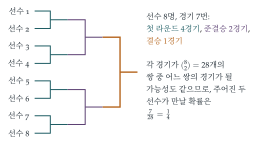

STEP II Specimen paper, 문제 16
계속 읽기 전에 문제를 먼저 읽어 보자. 문제는 STEP Support Programme의 문제 데이터베이스에 있다: step.maths.org/questions/spec-s2-q16
도입
윔블던(Wimbledon) 대회에는 \(128\)명의 선수가 대진표에 오른다. 두 선수를 무작위로 고를 때, 이들이 언젠가 맞붙을 확률(probability)은 얼마일까? 각 라운드에서 만날 확률을 모두 더해 볼 수도 있다. 각각은 살아남을 확률과 서로 대진이 짜일 확률의 곱이다. 이 방법도 통하지만 훨씬 좋은 방법이 있다. 경기 수를 세는 것이다. 모든 경기는 두 선수 사이에서 치러지고, 경기는 정확히 \(127\)번 열린다. 대칭성(symmetry)에 의해 모든 선수 쌍은 각 경기의 대진이 될 가능성이 똑같다. 따라서 구하는 확률은 \(127\)을 선수 쌍의 개수로 나눈 값이다.
이 문제는 올바른 대상을 세어서 확률 문제를 푸는 완벽한 예이다. 답 \(\frac{1}{2^{n-1}}\)은 단 한 줄로 나온다.
시작하기 전에
\(2^n\)명의 선수가 참가하는 녹아웃 토너먼트(knockout tournament)에서는 몇 경기가 열리는가? (각 경기에서 선수 한 명이 탈락한다.)
각 경기에서 정확히 한 명이 탈락하고, 한 명을 제외한 모든 선수가 탈락하므로 경기는 \(2^n - 1\)번 열린다.
차근차근 풀기
단계 1 첫 라운드
고른 두 선수를 \(X\)와 \(Y\)라 하자. 첫 라운드에서 \(X\)의 상대는 나머지 \(2^n - 1\)명 중 누구든 될 가능성이 같으므로 \[\mathrm{P}(\text{만나는 라운드가 } 1) = \frac{1}{2^n - 1}.\]
단계 2 핵심이 되는 대칭성
각 라운드의 대진 추첨은 무작위이고 모든 경기는 공정한 동전 던지기이다. 이 과정이 어떤 선수 쌍을 다른 쌍과 다르게 취급하는가?
그렇지 않다. 대진 추첨이 무작위이고 모든 경기가 \(50\)–\(50\)이므로, 선수들의 이름을 바꾸어 붙여도 어떤 확률도 달라지지 않는다. 따라서 특정한 경기(예를 들어 결승전)가 \(\binom{2^n}{2}\)개의 쌍 중 어느 쌍 사이에서 치러질 가능성도 모두 같다.
단계 3 결승전
결승전은 특정한 한 경기이므로, 그 경기가 \(X\)와 \(Y\) 사이에서 치러질 확률은 \[\frac{1}{\binom{2^n}{2}} = \frac{2}{2^n(2^n - 1)}.\] (검산: 두 선수 모두 결승에 올라야 하므로, 서로 다른 절반에 배치되고 각자 \(n - 1\)경기를 이겨야 한다.)
단계 4 어느 단계에서든
\(X\)와 \(Y\)는 많아야 한 번 만날 수 있다. 이 사실이 어떻게 경기별 확률을 더할 수 있게 해 주는가?
경기 \(m\)이 \(X\)와 \(Y\) 사이의 경기이면 \(1\)인 값을 \(I_m\)이라 하자. \(2^n - 1\)개의 경기 각각에 대해 \(\mathrm{P}(I_m = 1) = \binom{2^n}{2}^{-1}\)이고, 이 사건들은 서로 배반(mutually exclusive)이므로(두 선수는 두 번 만날 수 없다) \[\mathrm{P}(\text{만남}) = \frac{2^n - 1}{\binom{2^n}{2}} = \frac{2(2^n - 1)}{2^n(2^n - 1)} = \frac{1}{2^{n-1}}. \qed\] \(n = 7\)인 윔블던의 경우, 주어진 두 선수가 만날 확률은 \(\frac{1}{64}\)이다. 검산으로, 첫 라운드에는 \(2^n - 1\)개의 경기 중 \(2^{n-1}\)개가 들어 있으므로 \(\frac{2^{n-1}}{\binom{2^n}{2}} = \frac{1}{2^n - 1}\)이 되어 단계 1의 결과와 일치한다.

돌아보기
경기 수를 센다. 경기 수 \(2^n - 1\)이 핵심 사실이었다.
쌍 사이의 대칭성. 모든 선수 쌍은 특정한 경기를 치를 가능성이 같다.
경기에 대한 선형성. 두 선수는 많아야 한 번 만나므로, 만날 확률은 만나는 횟수의 기댓값이며 이는 경기에 대한 합이다.
숨은 수학
개수의 기댓값
단계 4의 논증은 사실 기댓값(expectation) 계산이다. \(X\)와 \(Y\)가 만나는 횟수는 경기마다 하나씩인 지시변수(indicator)들의 합이고, 그 기댓값(이 횟수는 \(0\) 또는 \(1\)이므로 만날 확률과 같다)은 지시변수들의 기댓값의 합이다. 이것이 기댓값의 선형성(linearity of expectation)이며, 9.11 절와 12.4 절에서도 사용되었다. 이 방법의 큰 장점은 라운드 사이의 복잡한 종속 관계를 전혀 신경 쓰지 않아도 된다는 것이다.
시드가 배정된 토너먼트
실제 토너먼트에는 시드(seed)가 배정된다. 가장 강한 선수들은 후반 라운드가 되기 전에는 서로 만나지 않도록 배치된다. 또 실제 경기는 \(50\)–\(50\)이 아니다. 두 가지 모두 대칭성을 깨뜨리므로, 주어진 두 선수가 만날 확률을 구하는 일은 진짜 계산이 된다. 스포츠를 모형화하는 통계학자들은 선수들의 레이팅으로부터 각 경기의 확률을 추정하여 바로 이런 계산으로 토너먼트 결과를 예측한다. 대칭적인 경우는 실제 효과를 측정하는 기준선이 된다.
사고 기술
올바른 대상을 고르기만 하면, 확률은 흔히 (유리한 대상의 개수) \(\div\) (가능성이 같은 대상의 개수)로 구할 수 있다. 여기서 그 대상은 경기와 쌍이었다.
무엇을 셀지 고르는 것이 조합적 확률(combinatorial probability)의 기술이다. 대학에서는 같은 아이디어가 이중 세기(double counting)(7.9 절)로, 그리고 어떤 구조의 개수의 기댓값으로 그 구조의 존재를 증명(proof)하는 확률적 방법(probabilistic method)으로 나타난다.
더 도전하기
라운드별로. \(X\)와 \(Y\)가 라운드 \(k\)에서 만날 확률이 \(\frac{2^{n-k}}{\binom{2^n}{2}}\)임을 직접 보이고, 이를 모두 더하면 \(\frac{1}{2^{n-1}}\)이 됨을 확인하여라.
고정된 대진표. 대신 대진표를 (그림처럼) 미리 고정해 두고 모든 선수를 그 안에 무작위로 배치한다면 답이 달라지는가?
강한 선수. 선수 \(X\)가 모든 경기에서 이긴다고 하자. 이제 \(X\)가 \(Y\)를 만날 확률은 얼마인가?
리그. 모든 쌍이 한 번씩 맞붙는 \(2n\)개 팀의 리그(league)에서는 몇 경기가 열리는가? 이에 대응하는 “만날 확률”은 무엇인가?
더 읽을거리
Frederick Mosteller, Fifty Challenging Problems in Probability (Dover). 토너먼트 문제가 실려 있다.
David Spiegelhalter, The Art of Statistics (Pelican). 모형화와 예측에 관한 책이다.
Joseph Blitzstein & Jessica Hwang, Introduction to Probability (CRC Press; 온라인 무료 공개). 지시변수와 대칭성을 다룬다.